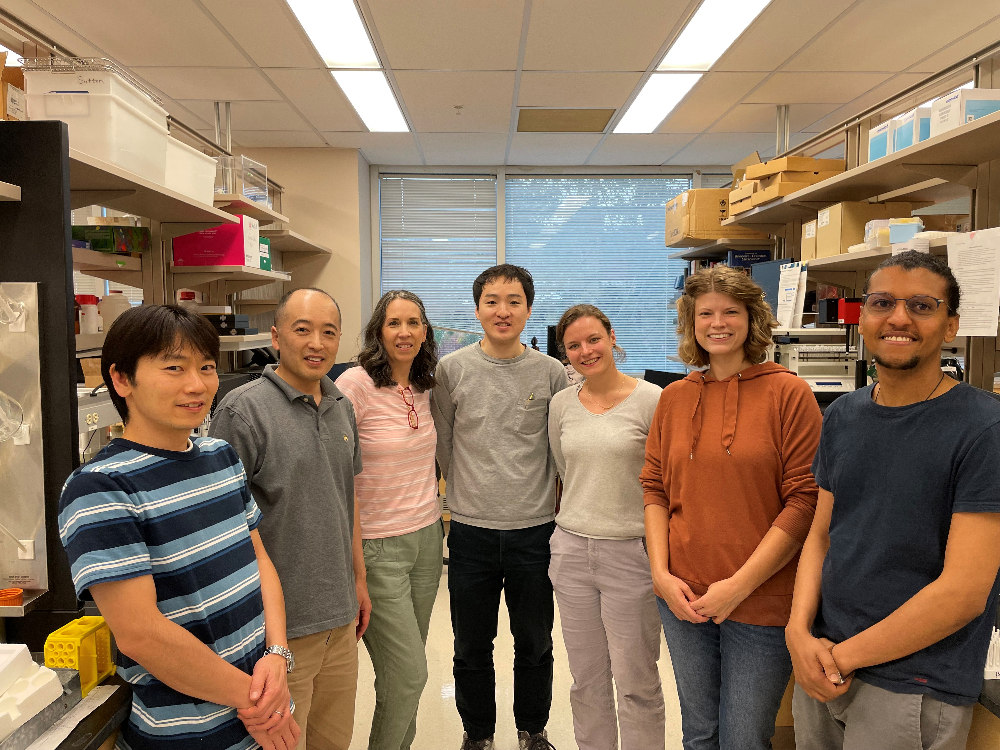
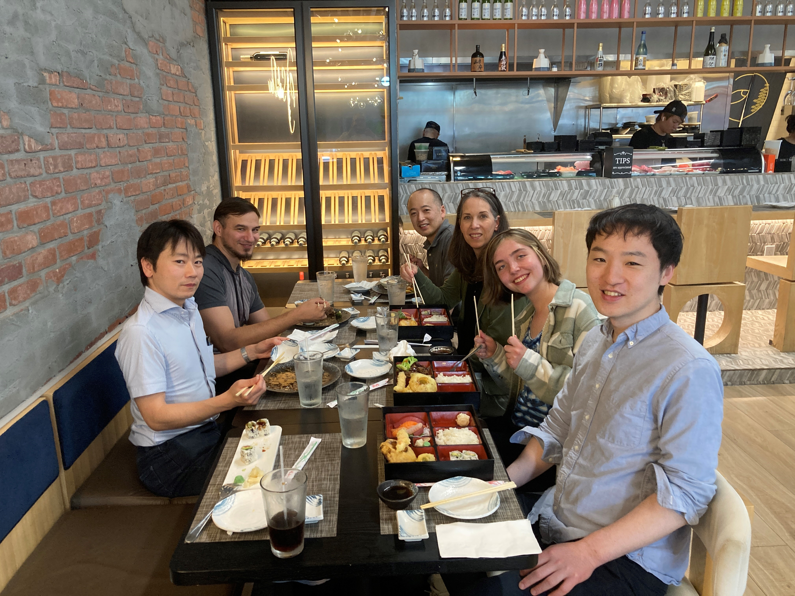
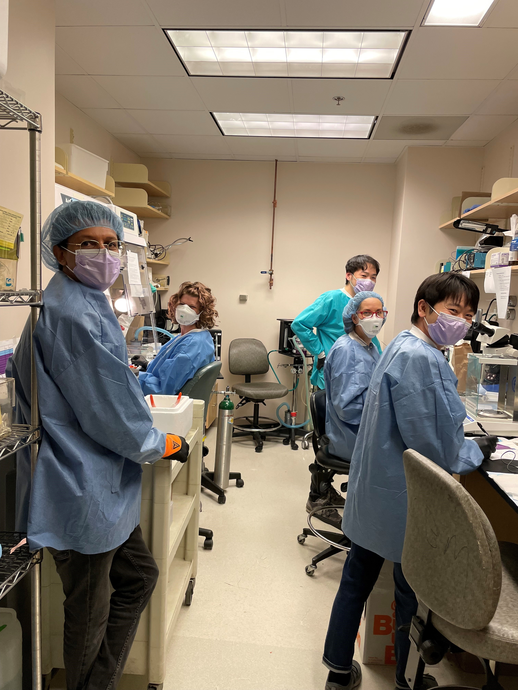
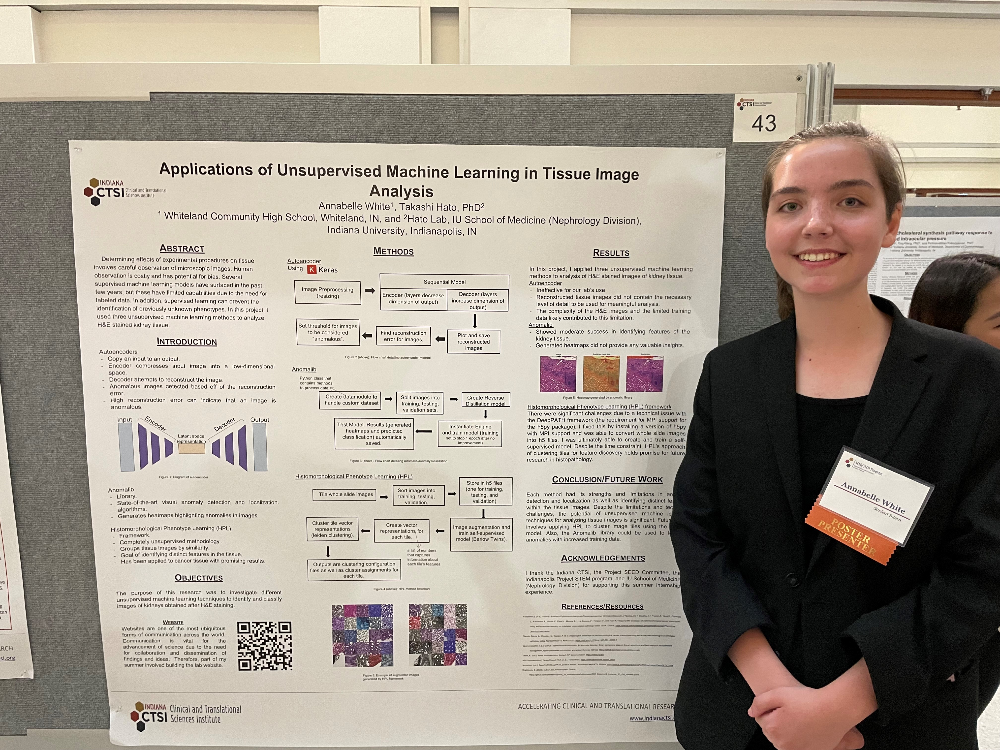

- Caroline Martens (MD/PhD, visiting scholar, KU Leuven)
- Segewkal Hawaze Heruye (industry)
- Maggie Mattek (University of Wisconsin)
- Jodi Yanagita (Nephrology Private Practice)
- Arvin Halim (PhD candidate at IU)
- Ryan Tsai (Undergraduate at Perdue University)
- Ashley Kidwell (MD/PhD candidate at Texas A&M)
- Bernard Maier (Assistant research professor at IU Hematology/Oncology)
- Danielle Janosevic (Assistant professor at IU Nephrology)
- David Rodriguez (graduate student at IU)
- Franziska Blender (University of Potsdam)
- Kevin Ni (Internal medicine resident at University of Colorado)
- Madelyn Chadwick (Purdue University)
- S. Louise Pay (writer/editor)
- Shiv Pratap Singh Yadav
- Thomas McCarthy (industry)
- Zain Siddiqui (Indiana University)
About the Hato lab
Broadly, our research focuses on understanding the remarkable plasticity and resilience of biologic systems, using the kidney as a model organ. Kidney injury is a devastating condition, yet under certain circumstances, the kidney can adopt a recovery phenotype and restore function. Our current efforts are directed at elucidating the timeline of acute kidney injury (AKI) in the setting of sepsis and uncovering the molecular mechanisms that drive this process. Sepsis-associated AKI is a complex pathologic state that progresses at a fast pace (Janosevic et al., eLife 2021). Our work has provided insights into the evolution of this syndrome as well as potential strategies for harnessing endogenous recovery mechanisms. For example, we have shown that bacterial sepsis provokes robust antiviral responses in the kidney, leading to translation shutdown (Hato et al., JCI 2019; Kidwell et al., JASN 2023). These inflammatory cascades trigger the generation of endogenous double-stranded RNA, creating a state that mimics viral infections. The resulting self-RNA overburden subsequently cues tissue repair by inducing adenosine-to-inosine RNA editing and polyamine biosynthesis, thereby linking early inflammation to recovery (Heruye et al., JCI 2024). Our laboratory employs multiple research tools, including advanced imaging, sequencing, bioinformatics, and RNA-based methodologies (e.g., ribosome profiling, antisense oligonucleotides, genome editing; Uchida et al., JCI 2019, Hato et al., JASN 2017, 2018). A recent review summarizes our current understanding of the molecular mechanisms underlying sepsis-associated AKI (Hato et al., JASN 2025).


Principal Investigator
Dr. Hato is the Gilman-Brater Associate Professor of Medicine and Adjunct Associate Professor of Medical & Molecular Genetics at Indiana University School of Medicine, as well as a staff physician at the Indianapolis VA Medical Center. He completed his postgraduate training in both Japan and the United States. He then worked as a hospitalist and clinical educator before joining the faculty at Indiana University, Division of Nephrology. Dr. Hato is the recipient of several awards including The Indiana University Board of Trustees Teaching Award, Indiana University Department of Medicine Outstanding Early Career Investigator Award, and Ralph W. and Grace M. Showalter Research Trust Fund Showalter Scholar. He is an elected member of the American Society for Clinical Investigation (ASCI). His research interests are centered on the discovery of targeted therapies for sepsis-induced organ failure. His research has been funded by the NIH and VA.
Links
Research Team
- Amy Zollman (lab manager)
- Jered Myslinski (bioinformatician)
- Annie Long (The Lilly Graduate Research Advanced Degrees program)
- Shinichi Makino (research fellow)
- Pierre Dagher (collaborator)
- Nobuhiro Kanazawa (research fellow)
2025 Summer Student
- Annabelle White (Undergraduate at Johns Hopkins University)





